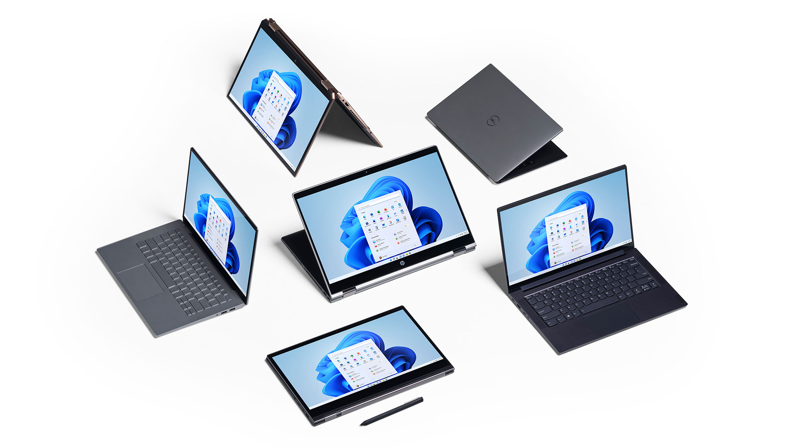

Trải nghiệm Windows mới, giúp bạn gần gũi với mọi người và những thứ bạn yêu thích.

Windows 11 cung cấp không gian sáng tạo và bình yên để bạn có thể theo đuổi niềm đam mê nhờ trải nghiệm mới mẻ. Từ menu Bắt Đầu được thiết kế lại tới những cách thức mới giúp kết nối với những người bạn yêu thích, tin tức, trò chơi và nội dung—Windows 11 là nơi để bạn suy ngẫm, thể hiện và sáng tạo theo cách tự nhiên.
Sử dụng tất cả các ứng dụng bạn cần đến và thực hiện nhiều tác vụ một cách dễ dàng nhờ các công cụ như Đính bố cục, Màn hình nền và một trải nghiệm gắn lại mới trực quan hơn.
Kết nối tức thì với những người mà bạn quan tâm ngay từ máy tính nhờ Microsoft Teams. Gọi điện hoặc trò chuyện miễn phí—dù bạn đang sử dụng thiết bị nào.1
Nhờ Microsoft Edge và vô số Tiện ích mà bạn có thể lựa chọn, bạn có thể nhanh chóng cập nhật tin tức, thông tin và nội dung giải trí quan trọng nhất đối với bạn.2 Dễ dàng tìm thấy những ứng dụng bạn cần đến cũng như các chương trình mà bạn muốn xem trong Microsoft Store mới.

Windows mới cung cấp cách thức mới để chơi trò chơi và nhiều tựa trò chơi nhất.

Windows mới sử dụng được trên nhiều loại thiết bị nhất, từ những đối tác mang đến cho bạn những cải tiến mới nhất về công nghệ cảm ứng, bút và thoại, giúp bạn dễ dàng tìm được thiết bị thích hợp nhất, giá cả phải chăng nhất.4

Bạn cần một chiếc PC mới ngay bây giờ? Dưới đây là một số PC chạy Windows 10 có thể nâng cấp miễn phí khi Windows 11 phát hành.4 5
Việc chuyển sang một PC mới khi bạn sao lưu tệp và ảnh từ PC cũ sang OneDrive dễ dàng hơn nhiều. 7
Windows 11 vẫn chưa có ở đây nhưng sẽ có vào cuối năm nay. Nếu háo hức, thì bạn có thể làm một số việc trong thời gian chờ đợi để chuẩn bị sẵn sàng. Trong lúc đó, bạn vẫn có thể sử dụng phiên bản Windows 11 - beta của chúng tôi bằng cách tham gia trải nghiệm người dùng Insider Build.
Dùng ứng dụng Kiểm tra tình trạng PC để xem PC hiện tại của bạn có đáp ứng các yêu cầu để chạy Windows 11. Nếu có, bạn có thể tải bản nâng cấp miễn phí khi được phát hành.

| Bộ xử lý | 1 gigahertz (GHz) hoặc tốc độ cao hơn nhờ 2 lõi trở lên trên bộ xử lý 64 bit tương thích hoặc Hệ thống trên Chip (SoC) |
|---|---|
| Bộ nhớ | RAM 4 GB |
| Dung lượng bộ nhớ | Thiết bị dung lượng lưu trữ 64 GB trở lên |
| Vi chương trình hệ thống | UEFI, hỗ trợ Khởi động an toàn |
| TPM | Mô-đun nền tảng đáng tin cậy (TPM) phiên bản 2.0 |
| Card đồ họa | Đồ họa tương thích DirectX 12 / WDDM 2.x | Màn hình hiển thị | > 9 inch với Độ phân giải HD (720p) |
| Kết nối Internet | Yêu cầu tài khoản Microsoft và kết nối Internet để thiết lập Windows 11 Home |
Một số tính năng yêu cầu phần cứng cụ thể, hãy xem chi tiết về yêu cầu hệ thống.
Hiển thị sản phẩm trước khi phát hành, có thể thay đổi.
1Một số tính năng yêu cầu phần cứng cụ thể, hãy xem https://www.microsoft.com/windows/windows-11-specifications. Yêu cầu truy cập Internet, có thể mất phí dịch vụ.
2Cần có quyền truy cập Internet. Có thể áp dụng phí dịch vụ.
4Một số tính năng yêu cầu phần cứng cụ thể, hãy xem https://www.microsoft.com/windows/windows-11-specifications.
5Kế hoạch phát hành bản nâng cấp vẫn đang hoàn thành nhưng theo lịch sẽ bắt đầu vào cuối năm 2021 và tiếp tục vào năm 2022. Thời gian cụ thể khác nhau tùy theo thiết bị.
7Cần có quyền truy cập Internet. Có thể áp dụng phí dịch vụ. Cần có tài khoản Microsoft (MSA) để có dung lượng 5GB trống; bộ nhớ bổ sung được cung cấp riêng với mức chi phí bổ sung hoặc với gói đăng ký Microsoft 365.